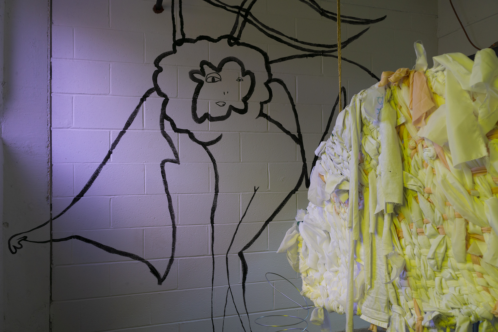

0. Prologue
Components:
Wise Lump (sculpture)
Portal of Answers (installation)
The Chrysanthemum's Folly (interactive performance, run time approx. 45 min)
yFFy (Connie Fu and Jungmok Yi) exhibited installation 'The Wise Lump & the Portal of Answers' and performance work 'The Chrysanthemum's Folly' at Cherry Street Pier in Philadelphia, PA as a part of Testing Grounds, a group show organized by Alexandria Nazar and Austen Camille Weymueller.
The Wise Lump and the Portal of Answers are inseparable, as if two sides of one coin, or a yin-yang. They are aspects of each other. The Wise Lump has wisdom from another place, the messages from which need to be translated in order to be received by the mainly English-speaking audience.
The Portal of Answers is a total being! They cannot be contained! They're a mischievous freak. Their specialty is throwing onions. Whether they actually have any answers at all remains to be answered. They are at once a place, a space, and an entity.
On October 25, 2020, an audience gathered at Cherry Street Pier to witness the Wise Lump and the Portal of Answers in action. To a soundtrack composed just days earlier in a whirlwind of production, the pseudo-deities emerged from their hiding places to greet the public.
Phase 1
The Portal of Answers pokes their head out of the installation room and drags a wagon, loudly, behind them as they make
their way toward the Lump, who is stationed about 300 feet away. Their journey is punctuated by moments where they pause,
squat, draw a face with a particular expression using oil stick on newsprint, and stick that face onto themselves via
conveniently placed wire spears along the curved edge of their headdress. Meanwhile, the Wise Lump is shuffling out of their
lumpy room, surveying the outside, speaking in Korean, realizing that they are unintelligible to the crowd, fetching a PA
system from back inside the room, and calibrating their speech until finally they are speaking an accented English.
Phase 2
The Wise Lump begins a monologue, asks the crowd rhetorical questions such as "Are you looking for career advice? I'd suggest contacting
your local career adviser." They are not making much sense, and plus they are speaking through a mask and fabric so their speech is
muffled. The Portal of Answers scurries around throwing vegetable matter at the Lump and audience members with glee. The audience
stands around half in curiosity, half in confusion. Such is the state of things!
Phase 3
Enough of the nonsense, the Wise Lump thinks. They initiate a game, whose rules are only half-explained. Basically, 10 members of the
audience are invited to participate. Each receives a sheet of riddles indicating the locations of chrysanthemum flowers hidden throughout
the performance space. They are to fetch a flower and bring it to the Lump, but can only move whilst the Lump is saying the phrase
"Mugunghwa kkochi pieotseumnida" (무궁화꽃이 피었습니다, lit. "The Rose of Sharon Is Blooming").
Phase 3
Enough of the nonsense, the Wise Lump thinks. They initiate a game, whose rules are only half-explained. Basically, 10 members of the
audience are invited to participate. Each receives a sheet of riddles indicating the locations of chrysanthemum flowers hidden throughout
the performance space. They are to fetch a flower and bring it to the Lump, but can only move whilst the Lump is saying the phrase
"Mugunghwa kkochi pieotseumnida" (무궁화꽃이 피었습니다, lit. "The Rose of Sharon Is Blooming").
Phase 4
If a game participant is caught moving whilst the Wise Lump is not saying "Mugunghwa kkochi pieotseumnida", then they are taken prisoner
and tied via satin ribbon to a long fabric tendril extending out of the Lump's room (aka extension of their self). The Portal of Answers
notices this, and - though still mischievously tossing things at people - begins to feel uneasy. You see, prisoners...are not free.
And who made these rules up anyway? Who am I to not have to abide by them, while these people do? And so, following this train of
thought, the Portal sneaks up to the prisoners one by one and cuts them free with a pair of purple kid scissors.
Phase 5
As the last prisoner is being cut free, the Lump catches wind of the Portal's indiscretion. They begin a wild goose chase around the
performance space, shrieking at the Portal "WHY JUST LET ME HAVE THEM I WANT TO KEEP THEM!". However, the Portal is faster, and runs
more or less free.
Phase 6
Without warning, the two entities in a coordinated fashion break from the scene and set up a merch table, where a large ceramic bowl of
fresh chrysanthemums is put on display for a limited-time deal: one flower and fortune in exchange for $, a hope or dream, or any other
object. Audience members one by one approach the table and exchange a good or hope for a fresh flower and a look to the future, crafted
by the forever-knowing / always-forgetting Lump and Portal.

Entrance to the Portal of Answers. PC Connie Fu.

Inside the Portal of Answers. PC Connie Fu.
Inside the Portal of Answers. PC Connie Fu.
Woven object inside the Portal of Answers, perhaps made by the Portal themself. PC Connie Fu.

The Wise Lump. PC Connie Fu.

The Portal of Answers with a distressed face on. PC Kaitlin Santoro.

The Portal of Answers hiding from the Lump as the Lump carries on with their monologue. PC Kaitlin Santoro.

The Portal of Answers in transit. PC Kaitlin Santoro.

The Portal of Answers in flight. PC Kaitlin Santoro.

The Wise Lump taking an audience member prisoner. PC Kaitlin Santoro.
The Lump and Portal convening with an audience member who wishes to receive a fortune flower. PC Kaitlin Santoro.